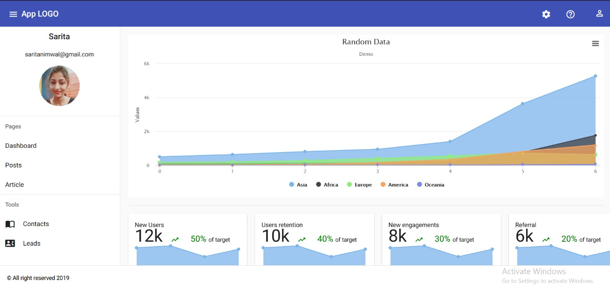
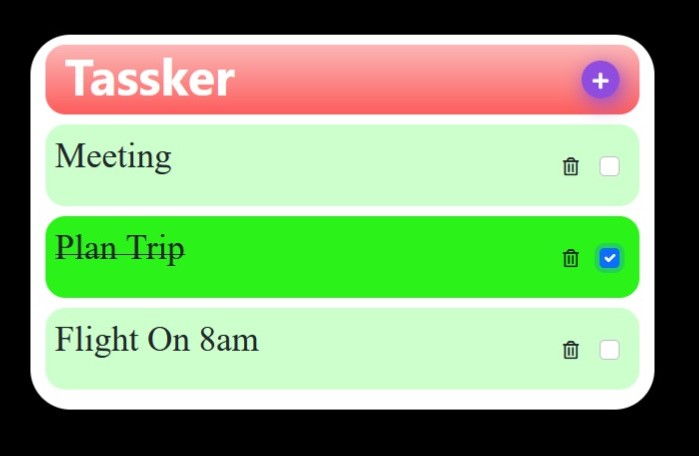
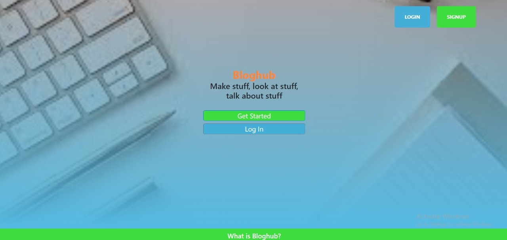
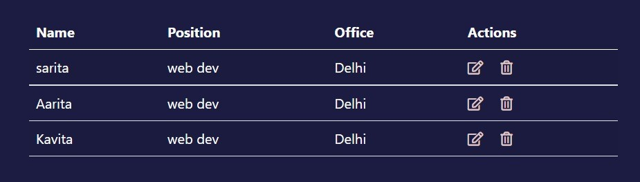

Revamped a client portal with Angular, improving UI performance, responsiveness, scalability, and maintainability for enterprise users.

Developed advanced dashboards and tracking systems with real-time data visualization, chart integrations, and map-based workflows using Google Maps, Mapbox, and GeoJSON.

Contributed to modular UI architecture and feature enhancements, building reusable Angular components, services, and maintainable frontend flows.

Led frontend improvements across Angular 8 to Angular 15+ migration work and currently contribute to Angular 18-based applications. Focus areas include lazy loading, code-splitting, performance optimization, API integration, and unit/e2e testing.